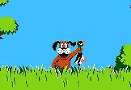

Proyecto 1
Próximamente
Junior developer en constante formación, para poder ser el mejor Full Stack. Portfolio en construcción.

Próximamente
Próximamente
Próximamente
Contrato de prácticas | Remoto | 2025
Desarrollo de Páginas Web (PHP, HTML, CSS, JavaScript)
Creación de Páginas Web y Diseño (Canva) en WordPress, Plugins con PHP, Base de Datos (MySQL)
Dependiente | Madrid | 2021-2025
Atención personalizada al cliente, identificando necesidades y asesorando sobre las características, materiales y usos de cada producto para ofrecer la mejor opción en cada situación. Gestión del servicio postventa, incluyendo reparaciones, mantenimiento y cuidado de las piezas, garantizando una experiencia de compra satisfactoria y fidelización del cliente.
Sales Assistant | Madrid | 2018-2021
Atención personalizada al cliente en tienda, asesorando sobre colecciones, tallas y estilos según las necesidades y preferencias individuales. Gestión del proceso de venta completo, incluyendo cobro, control de stock y reposición de producto, garantizando el cumplimiento de los estándares de imagen y calidad de la marca.
Procedo de un entorno profesional orientado al trato con personas, lo que me ha permitido desarrollar habilidades de comunicación, organización y resolución de incidencias que actualmente aplico al ámbito tecnológico.
Siempre he mostrado interés por la informática, pero nunca me atreví a dar el salto y gracias al apoyo que recibí por parte de mi entorno, decidí estudiar la FP de DAM. Una vez finalizada sigo ampliando mis conocimientos, con formaciones complementarias, dando lugar a una de mis nuevas aficiones cómo escuchar pódcast de ciberseguridad, de IA y acerca de cómo la informática cambia nuestro día a día.